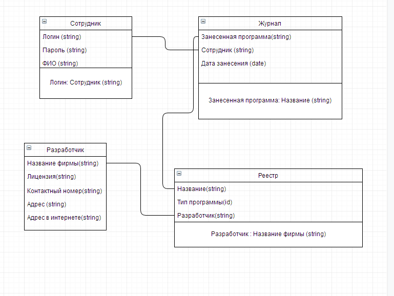

Исследователи – энтузиасты и яркие экстраверты. Они умеют общаться с людьми в компании и за ее пределами. Рождены для ведения переговоров, исследования новых возможностей и налаживания контактов. Они очень хорошо реагируют и отвечают на новые идеи и разработки, могут найти ресурсы и вне группы. Самые подходящие люди для установки внешних контактов и проведения последующих переговоров. Их роль - преподнести готовое решение, объяснить почему создан такой интерфейс и показать продукт с лучшей стороны. В компаниях занимаются общением с клиентами.
Это люди с высоким уровнем мотивации, неисчерпаемой энергией и великой жаждой достижений. Обычно это ярко выраженные экстраверты, обладающие сильной напористостью. Им нравится вести других и подталкивать к действиям. Если возникают препятствия, они быстро находят обходные пути. Они умеют легко воодушевлять команду, и очень полезны в группах с разными взглядами, так как способны укротить страсти. Творцы способны парить над проблемами такого рода, продолжая лидировать, не считаясь с ними. Они могут легко провести необходимее изменения и не отказываются от нестандартных решений. Отвечая названию, они пытаются навязывать группе некоторые образцы или формы поведения и деятельности. для общего понимания - контент манагер) или дизайнер. Контент - менеджер - человек который заливает все на сайт (музыка, картинки, статьи).
Генераторы идей являются инноваторами и изобретателями, могут быть очень креативными. Они сеют зерно и идеи, из которых прорастают большинство разработок и проектов. Обычно предпочитают работать самостоятельно, отделившись от других членов команды, используя свое воображение и часто следуя нетрадиционным путем. Имеют склонность быть интровертами, сильно реагируют как на критику, так и на похвалу. Часто из идеи имеют радикальный характер, и им не хватает практических усилий. Основная функция Генераторов идей – создание новых предложений и решение сложных комплексных проблем.
Интерактивный сайт по рекрутингу будущих программистов
Программная реализация функции
Дефицит специалистов Нереалистичные сроки и бюджет Разрыв между квалификацией специалистов и требованиями проекта Снижение Принятие Распределение ответственности между участниками проекта. Необходимо при распределении работ между участниками проекта четко разграничить сферы деятельности и ответственность каждого участника Повышение квалификации специалистов путем изучения учебного материала 3.Задача проекта
4. Риски
5. Стратегия управления рисками
6. Мероприятия управления рисками
Статусы задач в канбан-доске
Бэклог
Принято в работу
Разработка
Внедрение
Завершено
UML диаграмма: